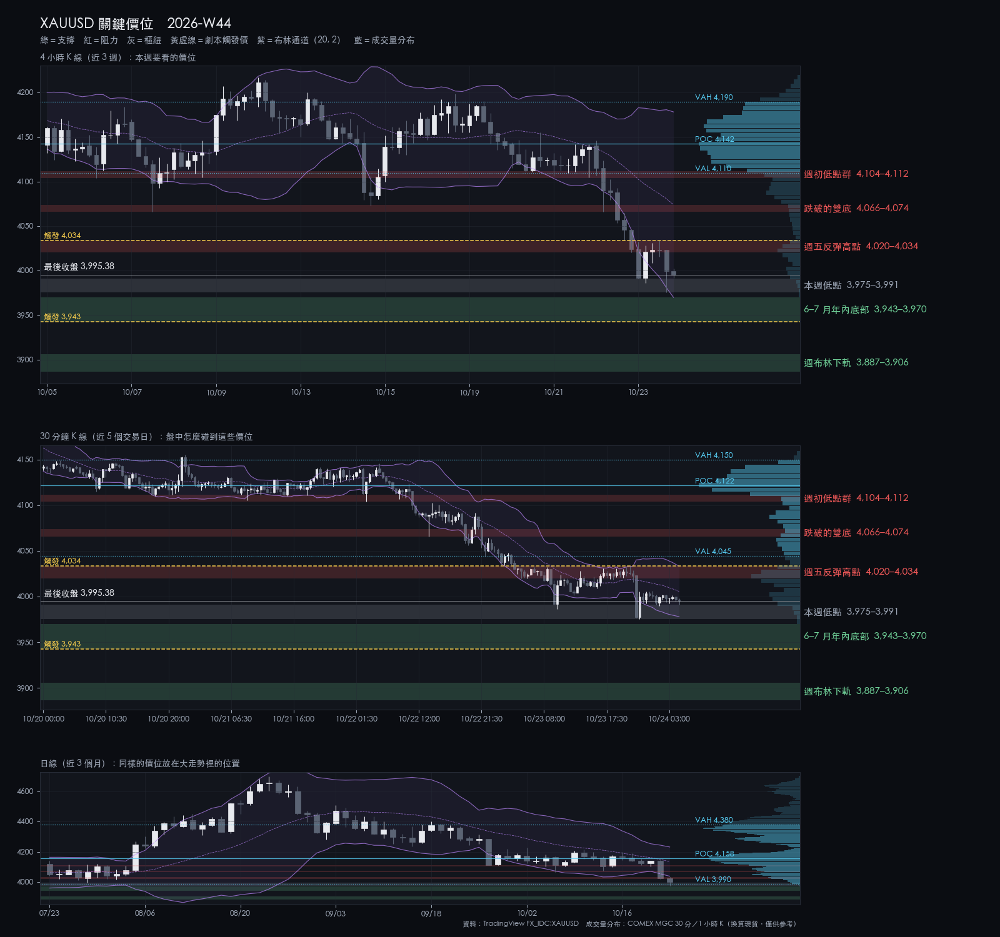
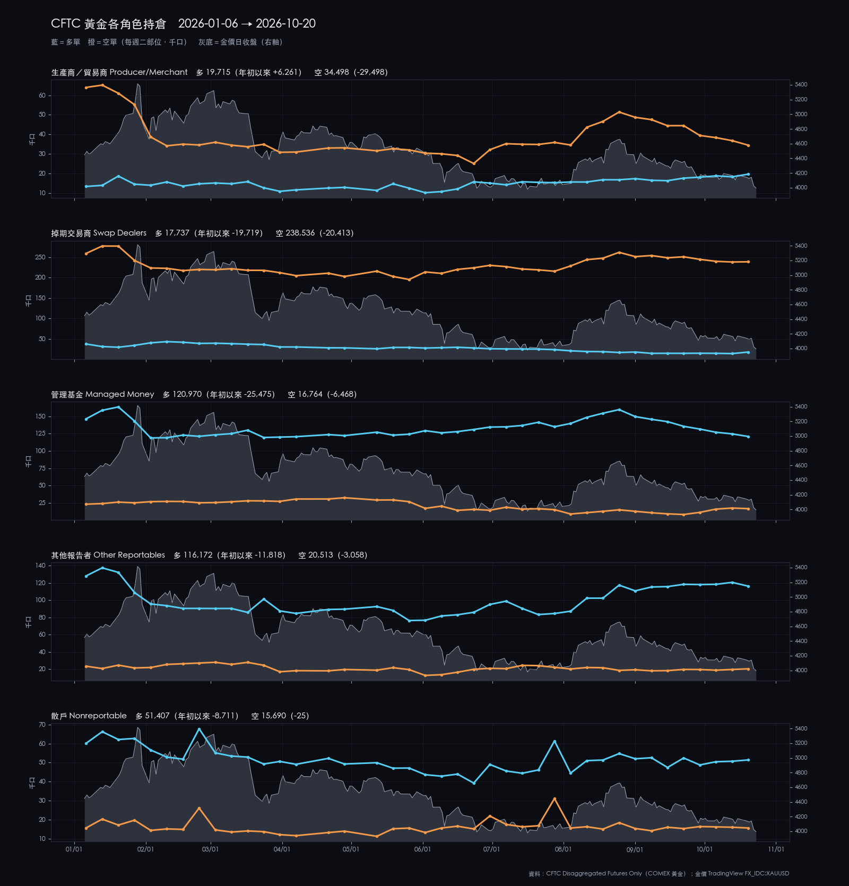
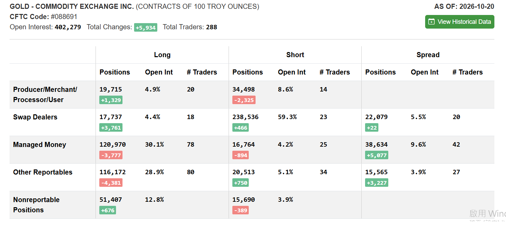

2026-W44 · Sun · 信心 medium 單一來源
XAUUSD 2026-W44 週報
週四跌破兩週雙底，週五跌破 4,000，週收 3995（−4.1%）；停在 6–7 月年內底部 3943–3970 上方。
本週建議 觀望：3943–3970 等 S2 錘頭；4h 站上 4034 才看反彈
資料截止：2026-10-23T20:30:00+00:00
關鍵價位

| 4,104.34–4,111.82 | 阻力 | 週初低點群 | 反彈到這裡不追多，週初支撐變壓力 |
|---|---|---|---|
| 4,066.00–4,074.17 | 阻力 | 跌破的雙底 | 4h 站回 4074 之上才算收復 |
| 4,020.30–4,034.11 | 阻力 | 週五反彈高點 | 4h 收上 4034 轉反彈劇本 |
| 3,975.49–3,991.09 | 樞紐 | 本週低點 | 守住維持整理；S2 第一候選 |
| 3,942.71–3,969.98 | 支撐 | 6–7 月年內底部 | S2 主要候選；4h 收破 3942.71 轉跌破劇本 |
| 3,886.72–3,905.82 | 支撐 | 週布林下軌 | 跌破劇本的目標 |
劇本
| 整理 | 45% | 在 3943–4034 之間整理，等 FOMC 與 PCE | — |
|---|---|---|---|
| 偏多 | 20% | 4h 站上 4034 後上看 4066–4074 | 4,034.11 |
| 偏空 | 35% | 4h 收破 3943 後下看 3887–3906 | 3,942.71 |
本週看什麼
- 3943–3970 年內底部守不守得住
- 4020–4034 週五反彈高點能否站上
- 週四 FOMC 02:00 與 PCE 20:30
S1／S2
| S1 V3.9 | wait | 不追：觸發點 4034 就在反彈壓力，上方 4066 是舊雙底 |
|---|---|---|
| S2 V3.2 | wait | B 級：等 3943–3970 年內底部出現正式錘頭 |
事件
| 2026-10-29 02:00 | FOMC 會議（10/27–28）聲明與主席記者會 | 聲明 02:00、記者會 02:30（台北；美國 11/1 才結束夏令時間，美東＋12 小時）。執行者建議：聲明前 1 小時不新進場，持有部位在聲明前評估是否減碼（判斷，非 POLICY 列舉的強制平倉）。Board 行事曆 10-24 至 10-31 沒有演講、作證或會議紀要；會前靜默期依 FOMC 規則到 10-29（美東）結束，會後可能有官員談話。今年有投票權的地區聯儲主席（2026-10-24 查核）：紐約 Williams、克里夫蘭 Hammack、達拉斯 Logan、明尼亞波利斯 Kashkari 的網站都沒有 10-26 至 10-31 的排程（克里夫蘭最近一場是 11-02 的 Fed Talk，未列講者；達拉斯與紐約頁面只列已發生的談話）；費城 Paulson 的活動頁回應 404，無法查核，記為 unknown。 |
|---|---|---|
| 2026-10-29 20:30 | 美國第三季 GDP 初值與 9 月個人所得支出（PCE） | PCE 為 POLICY 列舉事件：發布前評估持有部位是否平倉；週五前一晚 22:00 的強制平倉規則只適用週五 NFP／CPI，本次不適用。與 FOMC 聲明同一天，（判斷）週四是本週波動最集中的一天。 |
| 2026-10-30 20:30 | 美國第三季雇用成本指數（ECI） | 非 POLICY 列舉事件；（判斷，無評級量表）中影響，薪資通膨數據，在升息爭論中可能放大反應。週五發布但不是 NFP／CPI，強制平倉規則不適用；帳戶規則 4 照常：週六 04:00 前全部平倉。 |
上週回顧
- 週一衝到 4190 後回落，週二三在 4105–4155 整理
- 週四 4h 收破 4095，日跌 2.8%，跌破雙底 4066–4073
- 週五最低 3975.79，週收 3995.38；DXY 幾乎不動
| 2026-W40 | 4,285.1 | 4,286.2 | 4,110.898 | 4,142.75 | -3.32% |
|---|---|---|---|---|---|
| 2026-W41 | 4,136.5 | 4,207.54 | 4,066.58 | 4,194.145 | +1.39% |
| 2026-W42 | 4,194.8 | 4,217.19 | 4,073.49 | 4,165.175 | -0.71% |
| 2026-W43 | 4,163.6 | 4,190.38 | 3,975.792 | 3,995.38 | -4.04% |
市場消息
情緒 偏避險：金價週跌 4%、股市小跌，只有油價續漲
- AI 財報掀支出疑慮：Nasdaq 週三 −2.6%，6 月以來最大跌幅
- 沙烏地遭攻擊：Brent 一度約 114，5 月以來最高
- 黃金跌破 4,000：殖利率降也擋不住，疑為保證金賣壓
展開看消息整理：上週 7 則、一週變化、近 3 個月、近半年主線
上週消息（2026-10-17～2026-10-23）
| 10-20 | 台股／台幣 | 外資賣超、匯出，新台幣重貶收 32.617；韓股同日跌 3.5%。 | 加權指數 −529 點，收 46,293 | 鉅亨網、Shattered.io |
|---|---|---|---|---|
| 10-22 | 美股／AI | 一批 AI 財報再掀支出疑慮，晶片股領跌；Meta 現金流轉負。 | Nasdaq −2.6%（6 月來最大）、S&P −1.2% | Yahoo Finance (Reuters)、GV Wire |
| 10-22 | 黃金 | 美債殖利率下跌，金價仍單日跌逾 2%；分析認為是科技股大跌時的保證金賣壓。 未確認 | 金價跌到約 4,050，兩週多低點 | Vantage Markets、Timesbull |
| 10-22 | 台股／台幣 | 台股跌 846 點跌破季線；新台幣守 32.5，午後爆量，法人推測央行進場。 | 加權指數收 46,041（−1.8%） | 鉅亨網 |
| 10-22 | Fed／總經 | 10/28 FOMC 前，市場預期按兵不動，爭論轉向 12 月是否升息。 | — | FXStreet |
| 10-23 | 地緣／油價 | 沙烏地遭攻擊、中東供應風險升高，Brent 一度約 114，5 月以來最高。 | 能源類股創新高；S&P、Nasdaq 盤中五週低點 | Irish Times |
| 10-23 | 黃金 | 金價跌破 4,000，一個月跌約 6.6%，數月來最大週跌幅。 | — | Trading Economics |
一週變化
| 黃金（COMEX 期貨） | 4,010.00 | -4.09% | 10-23 |
|---|---|---|---|
| S&P 500 | 7,623.68 | -0.47% | 10-23 |
| Nasdaq | 25,955.34 | -0.71% | 10-23 |
| 加權指數 | 46,041.43 | -2.27% | 10-22 |
| Brent 原油 | 111.66 | +1.64% | 10-23 |
| 美 10 年期殖利率 | 4.99 | -11 bp | 10-23 |
| 美元指數 | 101.75 | -0.09% | 10-23 |
| 美元／台幣 | 32.57 | +0.75% | 10-23 |
| VIX | 19.45 | -2.70% | 10-23 |
資料：Yahoo Finance 日收盤（yfinance）
近 3 個月
| 07-29 | Fed／總經 | FOMC 再度按兵不動，三位委員投票主張升息。 |
|---|---|---|
| 09-16 | Fed／總經 | Fed 升息 1 碼至 3.75–4.00%，2023 年來首次；多數委員預期年內再升。 |
| 09-30 | 黃金 | 9 月金價跌約 8.5%，但全球黃金 ETF 持有量月底創新高。 |
| 10-01 | Fed／總經 | 美 10 年期殖利率盤中 5.34%，2002 年來最高；第三季升幅為本世紀最大。 |
| 10-06 | 美股／AI | Nasdaq 收 27,599.89 創收盤新高。 |
| 10-06 | 台股／台幣 | 加權指數盤中 49,968.92 創新高後回落，投信賣超 158 億、史上第四大。 |
| 10-08 | 地緣／油價 | 荷姆茲油輪遇襲創紀錄，9/28–10/4 一週十艘，通行量腰斬。 |
| 10-14 | Fed／總經 | 9 月 CPI 年增 3.7%（8 月 3.4%），升息擔憂再起。 |
近半年主線
| 伊朗衝突與油價 | 2026-02-28 | 油輪遇襲次數創紀錄、沙烏地遭攻擊，Brent 一度約 114、5 月以來最高；川普 9/22 稱期中選舉後談協議。 |
|---|---|---|
| Fed 重回升息與高殖利率 | 2026-06-17 | 10 年期殖利率 10/1 盤中 5.34% 後回到 5% 附近；10/28 預期不動，焦點是 12 月。 |
| AI 支出與回收疑慮 | 2026-06-05 | 財報再掀 AI 支出疑慮，Nasdaq 距 10/6 高點約 −6%；下週三大雲端業者財報。 |
| 黃金從 1 月高點回落 | 2026-01-29 | 跌破 4,000，距 1 月約 5,600 高點約 −29%；市場歸因升息預期，保證金賣壓說法未確認。 |
| 外資賣台股、台幣走貶 | 2026-10-06 | 外資連日賣超，新台幣一度貶破 32.7（約一年半新低），央行疑似進場穩匯。 |
消息只是背景，不是進出場依據；「未確認」表示只找到評論或二手來源。
CFTC
大戶淨多連八週下降到 10.4 萬；未平倉增加主要來自價差與交易商多單（判斷：不是單邊轉空）。
持倉反映的是建立它的那一週，不能預測下一週；看研究結論 →

CFTC 原始截圖（2026-10-20）

展開看細節：價位依據、劇本完整條件、市場摘要、證據限制
市場摘要
W43 收 3995.38，週開 4163.6，對 W42 週收 −4.08%，收在週區間 9.1% 處。週一衝到 4190.38 後回落；週二、週三在 4105–4155 整理；週四 4h 收破 4095.25 後跌破兩週雙底 4066.58–4073.49，週五跌破 4,000、最低 3975.79。價格在 4h 與 1d 的 EMA50／EMA200 之下，日收低於 1d 布林下軌，但停在 6–7 月年內底部 3942.71–3969.98 之上。DXY 週收 101.751，幾乎不動（−0.03%），本週跌勢不是美元推動（判斷）。
價位依據
| 週初低點群 | 4104.34–4111.82 | 計算值：4h EMA50 4104.34（50 根 4h 收盤指數平均）。實際成交價：10-21 日低 4105.00、10-22 02:00 那根 4h 低 4104.64、10-20 日低 4111.82。 帶寬 7.48 點，約 0.23 根 4h ATR（32.67）。週二、週三兩天在這裡止跌，週四跌破後成為上方第二層；4h EMA50 壓在下緣。（以 ATR 衡量帶寬是執行者選定的描述方式，未經核准，下同。） |
|---|---|---|
| 跌破的雙底 | 4066.00–4074.17 | 實際成交價：W41 週低 4066.58（10-07）、W42 週低 4073.49（10-14）、週四 10:00 那根 4h 低 4066.00。計算值：4h 布林中軌 4074.17（20 根 4h 收盤簡單平均）。 帶寬 8.17 點，約 0.25 根 4h ATR。兩週的支撐在週四被跌破（判斷：跌破的支撐常變成反彈的壓力）；4h 中軌正好在上緣，是反彈劇本的第一目標。 |
| 週五反彈高點 | 4020.30–4034.11 | 實際成交價：10-23 日高 4034.11（週五 18:00 那根 4h）、週五 10:00 那根 4h 高 4028.59、週四日收 4024.33、週五 02:00 那根 4h 低 4020.30。計算值：30m 布林上軌 4033.63（20 根 30m 收盤平均 4005.93 加兩倍標準差）。 帶寬 13.81 點，約 0.42 根 4h ATR。週五兩次反彈都停在這裡（4028.59、4034.11），上緣與 30m 上軌只差 0.49 點；週收 3995.38 在下緣下方 24.92 點。 |
| 本週低點 | 3975.49–3991.09 | 實際成交價：週五 06:00 那根 4h 低 3991.09、10:00 那根低 3986.49、22:00 那根低 3975.49（日線週低 3975.792）。 帶寬 15.60 點，約 0.48 根 4h ATR。週五三次跌進這一帶都收在 3990 之上（4h 收盤 3991.90、4020.94、3999.85）；週收 3995.38 在上緣上方 4.29 點，是最近的下方參考。 |
| 6–7 月年內底部 | 3942.71–3969.98 | 實際成交價：06-30 日低 3942.71（年內最低；4h 為 3942.43）、06-24 日低 3959.12、07-17 日低 3959.778、6–7 月最低 4h 收盤 3969.35（06-30 06:00 那根）。計算值：4h 布林下軌 3969.98（4h 中軌 4074.17 減兩倍標準差）。 帶寬 27.27 點，約 0.83 根 4h ATR，比其他帶寬，因為它是三個月前的區域、用四次測試的範圍而不是單一價位：6–7 月四次跌進 3975 以下（以 3975 計次、「一週內收回」為執行者選定，未經核准）（06-24／25、06-30、07-01、07-16／17），4h 收盤從未低於 3969.35，每次一週內收回。下緣是年內最低點，收破即創年內新低。 |
| 週布林下軌 | 3886.72–3905.82 | 實際成交價：2025-10-28 日低 3886.72（該週低點）。計算值：週布林下軌 3905.82（20 根週收盤平均 4229.55 減兩倍標準差）。 帶寬 19.10 點，約 0.58 根 4h ATR。3886.72 是 2025-10-28 以來的最低成交價，與週線通道下緣重疊；跌破年內低點後，更近的實際成交低點是 3915.17–3929.66（2025-10-29、10-30、11-04、11-05 四個日低），可能先有反應，本報告未列為價位帶。距週收 89.56–108.66 點，約 1.3–1.6 根日 ATR（68.75）。 |
劇本完整條件
| 整理 | 45% | 價格在年內底部 3942.71–3969.98 與週五反彈高點 4020.30–4034.11 之間往復，沒有 4h 收盤站上 4034.11，也沒有 4h 收盤跌破 3942.71 後延續。 | 4h 收盤站上 4034.11，或 4h 收盤跌破 3942.71 且下一根未收回（「下一根」為執行者選定的確認方式，未經核准）。 | 區間內往復：上看 4020.30–4034.11 的反應，下看 3975.49–3991.09 與 3942.71–3969.98。 |
|---|---|---|---|---|
| 偏多 | 20% | 4h 收盤站上 4034.11（週五反彈高點帶上緣），回踩不破 4020.30（帶下緣）。 | 站上後 4h 收盤跌回 4020.30 之下。 | 第一目標 4066.00–4074.17（跌破的雙底與 4h 中軌）；其上 4104.34–4111.82（週初低點群）。 |
| 偏空 | 35% | 4h 收盤跌破 3942.71（年內最低點，年內底部下緣），之後 3 根 4h 內無法收回 3969.98（3 根為執行者選定的觀察窗，未經核准）。 | 跌破後 4h 收盤重新站回 3991.09（本週低點帶上緣）之上。 | 第一目標 3886.72–3905.82（2025-10-28 以來最低點與週布林下軌）；途中 3915.17–3929.66（2025-10／11 日低群）可能先有反應；其下本報告未列價位。 |
轉折條件
4h 收盤站上 4034.11，或 4h 收盤跌破 3942.71 且下一根未收回——任一發生即脫離整理劇本，屆時以 live 結構重新評估。
S1／S2 完整條件
| S1 V3.9 | 條件式，且要求 live 正式 V3.9 訊號。30m 布林上軌 4033.63 距最後收盤 38.25 點，觸發點就在週五反彈高點 4020.30–4034.11 的上緣，到跌破的雙底 4066.00 約 32 點，空間小於 2R。條件式預評等級為「—」（不建議）；4h 站上 4034.11 且站穩後的訊號才有空間。S1 正在預註冊前測，觸及停損門檻即暫停推薦。 | 固定停損：成交價下方 25 點。 | 固定口數與固定停損（細節見密碼頁）；同時只持一個部位。 |
|---|---|---|---|
| S2 V3.2 | 等待價格回測 3942.71–3969.98 年內底部（主要）或 3975.49–3991.09 本週低點，並出現正式 V3.2 錘頭訊號；報告作者建議 4h 收破 3942.71 後不在 3943 與 3906 之間接刀，FOMC 聲明前 1 小時不新進場（非策略規則）。條件式預評等級為 B。 | 固定停損：成交價下方 25 點；TP1 50 點、TP2 100 點。 | 固定口數與固定停損（細節見密碼頁）；同時只持一個部位。S2 不高於 S1；每週最多 2 次實際進場，週一重置。 |
CFTC 完整數字
本報告 CFTC 段落的原始判讀依據（AS OF 2026-10-20，週二持倉，不含週四跌破雙底與週五跌破 4,000）。可對照本圖核對：未平倉 402,279（+5,934）；Managed Money 多 120,970（−3,777）、空 16,764（−894）、價差 38,634（+5,077），淨多 104,206，連八週下降；Swap Dealers 多 17,737（+3,761）；散戶（Nonreportable）淨多 35,717（+1,065）。以上僅作描述，不作方向訊號。Commitments of Traders 由 cftc.gov 免費公布，屬美國公有領域資料；本圖只含部位統計，不含任何帳戶、持倉或身分資訊。
證據限制
- 本期僅一份合格報告（另一 producer 暫停中），為單一來源；方向判斷沒有交叉檢驗。
- 本報告的覆核由同一個模型在無建構記憶的情況下執行，不是獨立檢驗：範圍僅限可比對的契約遵循，不涵蓋判斷。
- CFTC 部位與各角色年初至今圖僅作背景描述，不作方向訊號；研究總覽中相關的「研究方向」結論強度皆為 weak、未通過家族校正。原圖附於本頁供讀者核對。
- 市場消息是本週新增的背景整理：摘要以自己的文字寫成，「未確認」表示只找到評論或二手來源；新聞不作為價位、機率或進場條件。
- 價位圖的成交量分布以 COMEX 微型黃金期貨（MGC）成交量換算現貨價位，只作參考；過去研究顯示成交量無法區分 S1／S2 的勝負，因此不作為價位或進場條件。
- GVZ、10 年期公債殖利率、通膨預期與波動率指標的 TradingView 資料自 2026-06-18 起未更新，完整即時 Macro 判定為 unknown。
- 來源比較共 10 組：4 組 similar、6 組 review（XAUUSD 30m 端點落差、XAUUSD 4h 與週線數值差、DXY 4h／日線／週線差異）。正式點位一律採人工匯出。
- 費城聯儲主席的行程頁無法開啟，下週是否有談話未能查核。
- 公開版本不揭露帳戶部位或交易日誌內容。
研究證據，非投資建議。所有 Entry／SL 皆為條件式，實際執行前必須以 live TradingView 重新確認訊號與價格；最終決定屬於帳戶擁有者。